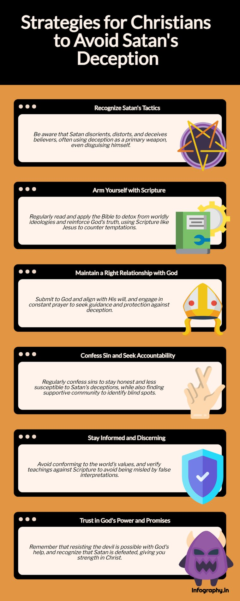

A letter to my BSF Brothers · March 29, 2025 · part of Letters to the Brothers.
Good day to you all! It is a beautiful day out here in CA. It feels like the first day of Spring!
I continue to do my BSF lessons offline, but I thought I would share my answer for Question 11c for tonight (below). Actually, it is not my answer. I asked AI. BUT, I always do my own answers first before I look at any other outside resources. I believe that is in the BSF Guidelines and I respect that completely. I also do not read the Lesson Notes for the week until after the lesson. Again, another BSF Guideline that I respect. I am very sensitive to this because I think I own every Christian Bible resource ever written (now in my iErv Cloud) and I know it would be wrong for me to turn to any of them before I read and studied the Scripture for myself and asked the Holy Spirit to teach. I know the Holy Spirit can teach me through my Bible resources as well but I just think it is a slippery slope to be on. — Erv

Comments